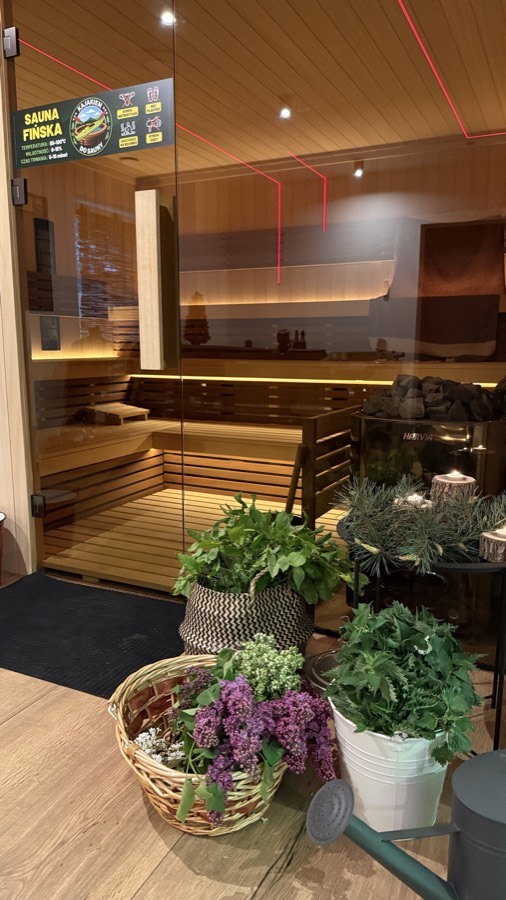
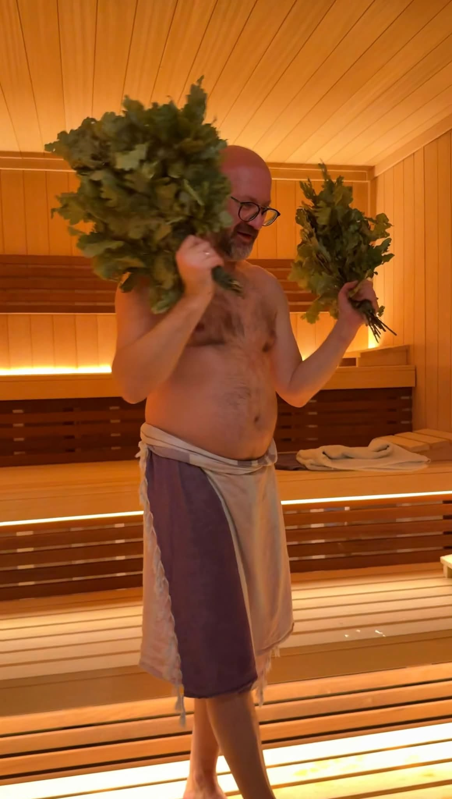
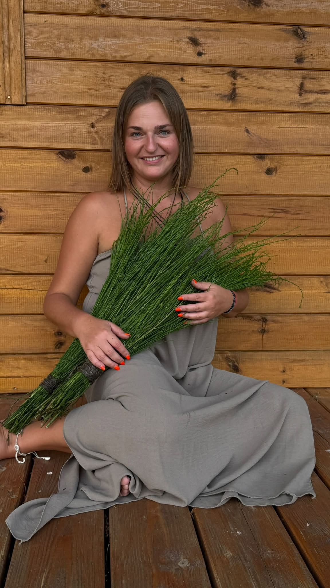
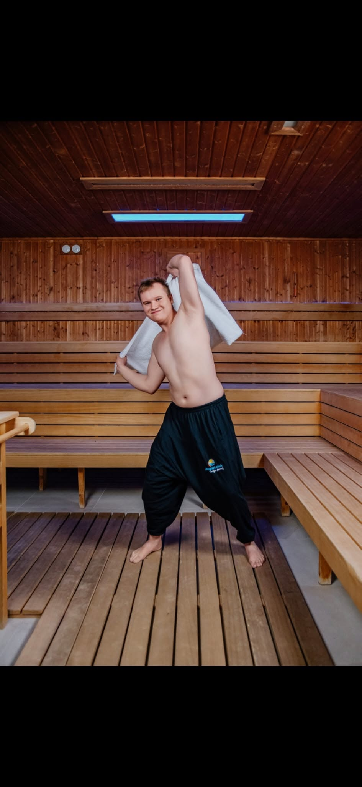

Wynajem prywatny
Sauna na wyłączność dla Ciebie i Twojej grupy. Termin i szczegóły wynajmu ustalane indywidualnie.
Zarezerwuj saunęMarzysz · Sauna
Zwolnij tempo w Marzyszu: ciepło drewna, cisza i zieleń tuż obok. Wybierz wypoczynek w swoim gronie albo dołącz do wspólnego seansu.

Sauna na wyłączność dla Ciebie i Twojej grupy. Termin i szczegóły wynajmu ustalane indywidualnie.
Zarezerwuj saunęRytuały saunowe z aromatami i muzyką. Terminy znajdziesz w kalendarzu wydarzeń na Facebooku.
Sprawdź wydarzeniaOgłoszenia o seansach publikujemy na naszym profilu na Facebooku.
Poznaj osoby, które tworzą wyjątkową atmosferę naszych seansów saunowych. Każdy rytuał to połączenie ciepła, aromatów, muzyki i indywidualnego podejścia.

Prowadzący ceremonie saunowe
Tomek buduje wieczór wokół jednego motywu muzycznego. Jeden ze swoich seansów oparł na „November Rain” Guns N’ Roses: jesiennie i nastrojowo, momentami spokojnie, ale z ogniem w saunie.

Prowadząca ceremonie saunowe
„Wtorkowy Chill z Magdą” brzmi łagodnie, ale Magda lubi też porządnie dołożyć do pieca. Saunuje bez pośpiechu i bez udawania, w naturalnych zapachach i dobrym towarzystwie.

Saunamistrz, gość specjalny
Mateusz prowadzi wieczór przez różne aromaty, temperatury i rytuały. Każda ceremonia ma u niego inny charakter, a całość to ogień, oddech i energia.